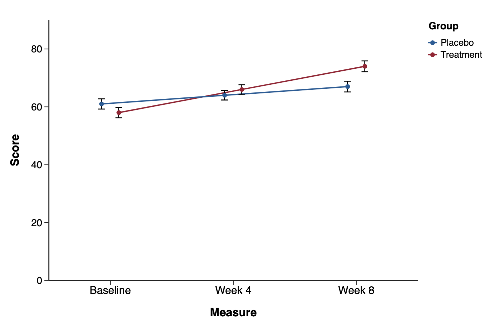
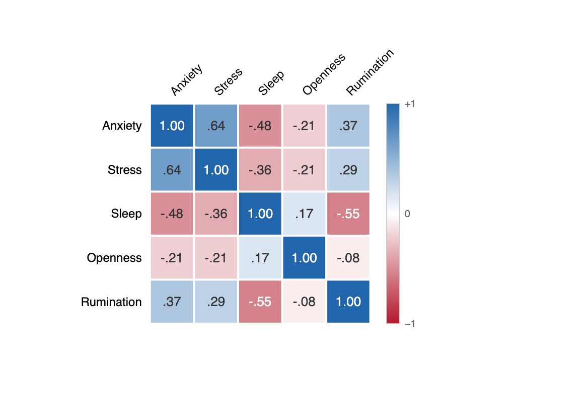
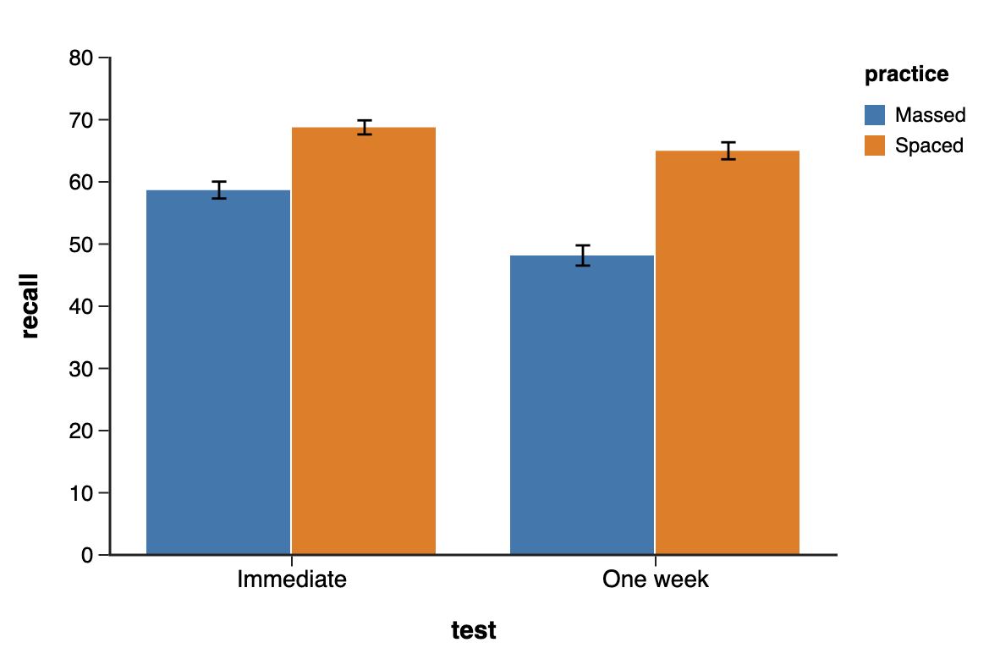
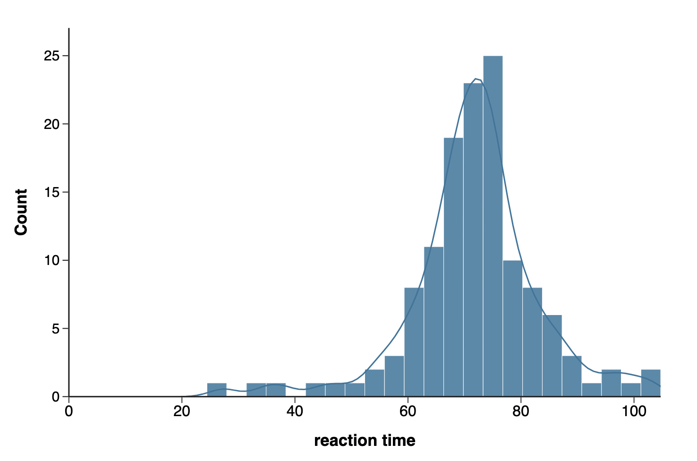
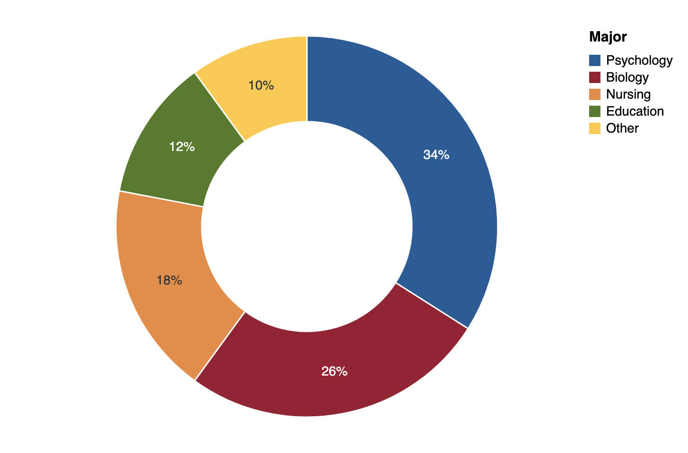

Pandion Plots
Pandion Plots
Gallery
Real charts, straight from the app.
Every figure below is an unretouched Pandion Plots render using the default styling. This is where your first draft begins.








Start with a few clicks. Import your data, assign your variables, and let the defaults create the first draft. Then click the chart to refine it.
Open the browser app